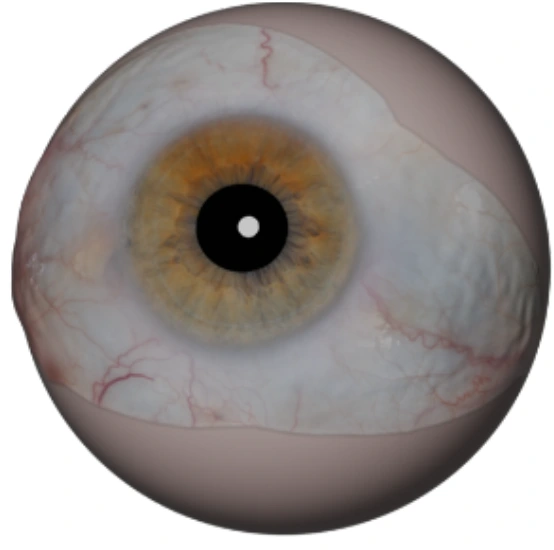

SIGGRAPH Asia 2026 · ACM Transactions on Graphics
Capturing Rich Details of Human Eyes
Institute of Computing Technology, Chinese Academy of Sciences
University of Chinese Academy of Sciences

Capturing the eye, component by component
Reflections and refraction couple the appearance of the sclera, cornea, and iris in photographs. We use optical measurements tailored to each component to constrain its reconstruction in stages.

Sclera
Multi-view, multi-gaze imaging recovers subject-specific scleral geometry and establishes an eye-centered coordinate frame.
Cornea
Specular highlights and dense Placido-ring measurements estimate the anterior corneal surface.
Iris
Photometric reconstruction uses the estimated cornea to account for refraction and recover iris albedo, normals, and fine displacement.
Demonstration
DetailedEyes@CAS
The research dataset contains 20 reconstructed eyes from 10 participants, with component meshes, textures, and five model-generated iris states per eye. Access is by application.

To apply, complete and sign the application and license PDF in English, then send the complete PDF to xsh@ict.ac.cn.
Citation
Zhiheng Zhang, Shuang Yang, and Shihong Xia. 2026. Capturing Rich Details of Human Eyes. ACM Transactions on Graphics 45, 6, Article 203.
Download BibTeX